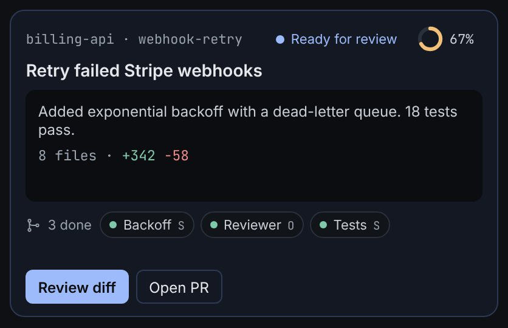

The wall
An agent that needs you shows it on its tile
Three things stop an agent: it wants permission, it has a question, or it is finished. Each one shows up in color on the wall, and you deal with it right there. N jumps to the next agent that is waiting.


